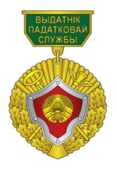
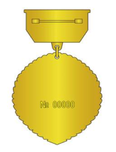

@@include('_head.html',{
"title":"О министерстве по налогам и сборам"
})
@@include('_header.html',{})
История налоговой службы Республики Беларусь
1992
Постановлением Совета Министров Республики Беларусь от 05.08.1992 № 485 «Вопросы укрепления налоговой службы» в Главной государственной налоговой инспекции создано управление налоговых расследований и соответствующие подразделения в государственных налоговых инспекциях по областям и г. Минску и в городах с численностью населения свыше 90 тыс. человек.
1994
Указом Президента Республики Беларусь от 17.10.1994 № 150 Главная государственная налоговая инспекция при Министерстве финансов переименована в Главную государственную налоговую инспекцию при Кабинете Министров Республики Беларусь и наделена правами министерств и самостоятельных ведомств.
1997
Указом Президента Республики Беларусь от 11.01.1997 № 30 Главная государственная налоговая инспекция при Кабинете Министров Республики Беларусь была преобразована в Государственный налоговый комитет Республики Беларусь, который вошёл в систему республиканских органов государственного управления, подчинённых Правительству Республики Беларусь.
1998
Указом Президента Республики Беларусь от 11.02.1998 № 71 Главное управление налоговых расследований, входящее в состав Государственного налогового комитета, преобразовано в Государственный комитет финансовых расследований Республики Беларусь.
1999
Указом Президента Республики Беларусь от 03.08.1999 № 456 при Государственном налоговом комитете Республики Беларусь создан Комитет по контролю за производством и оборотом алкогольной, непищевой спиртосодержащей продукции, спирта этилового из непищевого сырья и табачных изделий.
2001
Указом Президента Республики Беларусь от 24.09.2001 № 516 Государственный налоговый комитет преобразован в Министерство по налогам и сборам Республики Беларусь, а Комитет по контролю за производством и оборотом алкогольной, непищевой спиртосодержащей продукции, спирта этилового из непищевого сырья и табачных изделий при Государственном налоговом комитете в департамент по контролю за производством и оборотом алкогольной, непищевой спиртосодержащей продукции, спирта этилового из непищевого сырья и табачных изделий Министерства по налогам и сборам без прав юридического лица.
2004
C 16 августа 2004 г. департамент преобразован в управление контроля за подакцизными товарами главного управления организации контрольной деятельности.
2009
В 2009 году было создано главное управление контроля подакцизных товаров и электронных технологий.
Деятельность налоговых органов в республике регламентируется:
Положением о Министерстве по налогам и сборам Республики Беларусь, утверждённым постановлением Совета Министров Республики Беларусь от 31.10.2001 № 1592 «Вопросы Министерства по налогам и сборам Республики Беларусь
Указом Президента Республики Беларусь от 16.10.2009 № 510 «О совершенствовании контрольной (надзорной) деятельности в Республике Беларусь
Налоговым кодексом Республики Беларусь
Типовым положением об инспекции Министерства по налогам и сборам Республики Беларусь, утвержденным постановлением МНС от 28.12.2001 № 136 (в редакции постановления МНС от 19.03.2010 № 17)
Для обсуждения и выработки решений по наиболее важным вопросам утверждена коллегия МНС.
Подготовка специалистов для налоговых органов осуществляется в:
УО «Белорусский государственный экономический университет»
Академии управления при Президенте Республики Беларусь
на экономических факультетах других учебных заведений республики.
Повышение квалификации кадров осуществляется на базе учебных учреждений при учебных заведениях республики.
Среди них ведущее место занимают:
Институт государственной службы Академии управления при Президенте Республики Беларусь
Институт повышения квалификации и переподготовки экономических кадров УО «Белорусский государственный экономический университет»
УО «Учебный центр подготовки, повышения квалификации и переподготовки кадров» Министерства финансов Республики Беларусь
Символика МНС
Указом Президента Республики Беларусь от 04.11.1998 № 527 установлен профессиональный праздник «День работников налоговых органов», который отмечается ежегодно во второе воскресенье июля месяца.


Указом Президента Республики Беларусь от 10.06.2005 № 268 учреждены:
геральдический знак – эмблема налоговых органов
нагрудный знак Министерства по налогам и сборам Республики Беларусь «Выдатнiк падатковай службы»
За высокие показатели в труде работники налоговых органов:
награждаются нагрудным знаком Министерства по налогам и сборам Республики Беларусь «Выдатнік падатковай службы», почётной грамотой Министерства по налогам и сборам
поощряются объявлением Благодарности Министра по налогам и сборам
заносятся на Доску почета Министерства по налогам и сборам Республики Беларусь
Руководители налоговых органов Республики Беларусь с момента создания службы